Computers
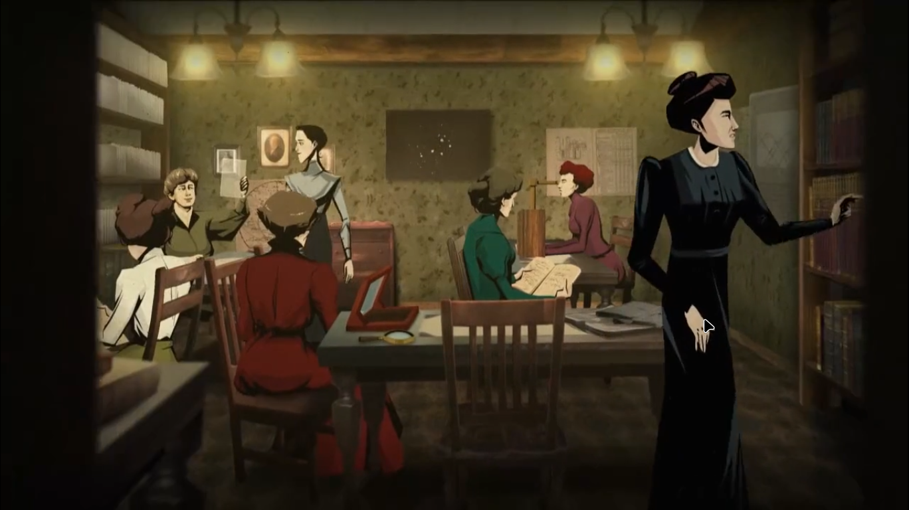Light comming from the star was passed through the prism of the telescope .
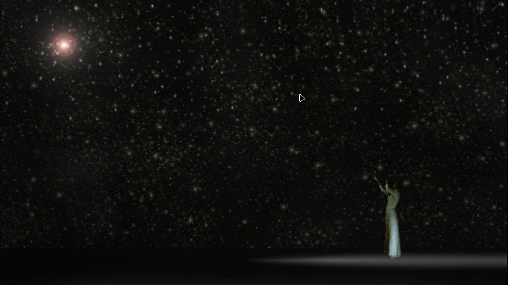 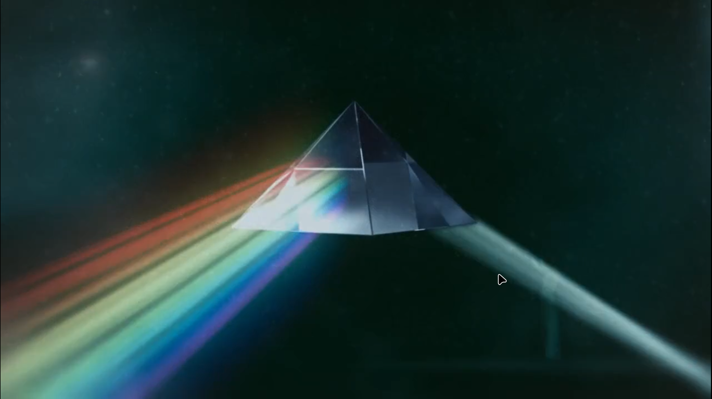This is the spectrum of the star .
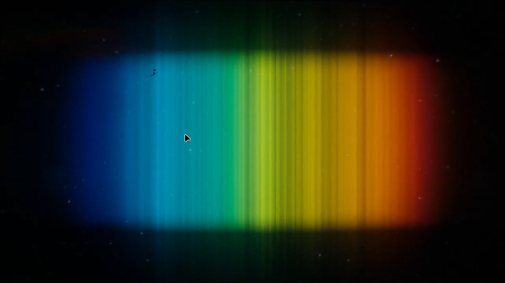Based on spectrum of light ,stars can be classified in 7 goups , can be classified in 7 different letter class
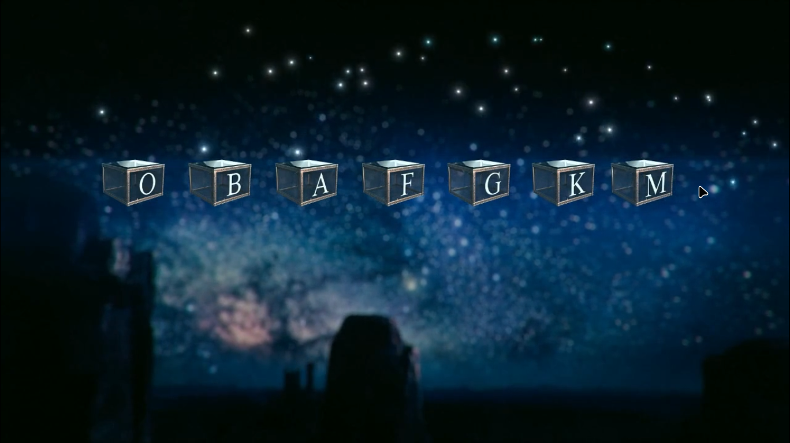Each class can be divided into 7 small classes
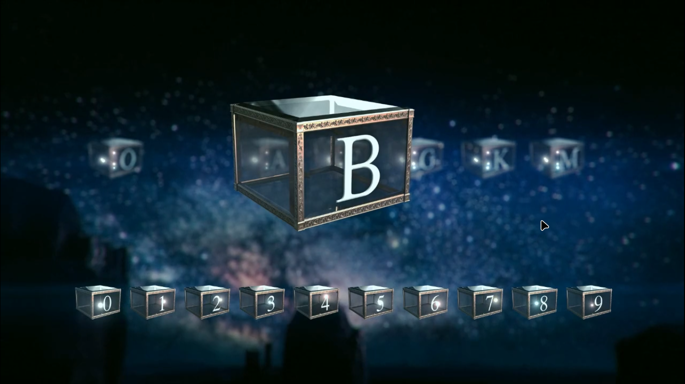This spectrum is a temperature scale
Bible of astrophysics
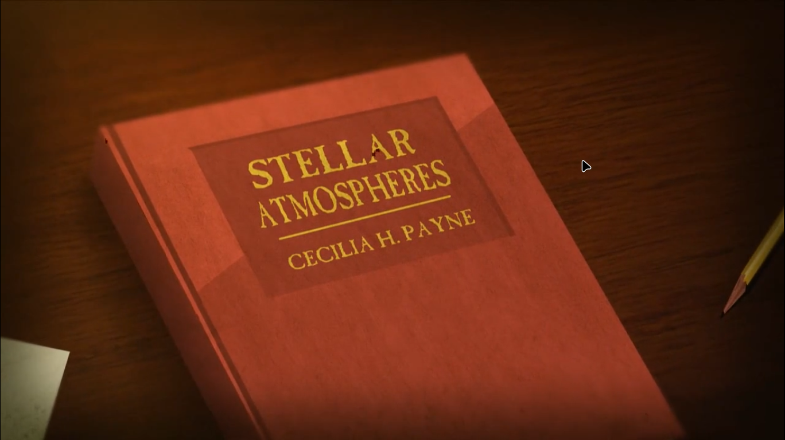Stars are of different type , some biggest stars are 1 cr times bigger then the smallest star.
Some starts are 10 hundered crores (10 arab) and some stars are currently being born
at the core of the stars when atoms combine , they give birth to light
stars are formed from the dust clouds
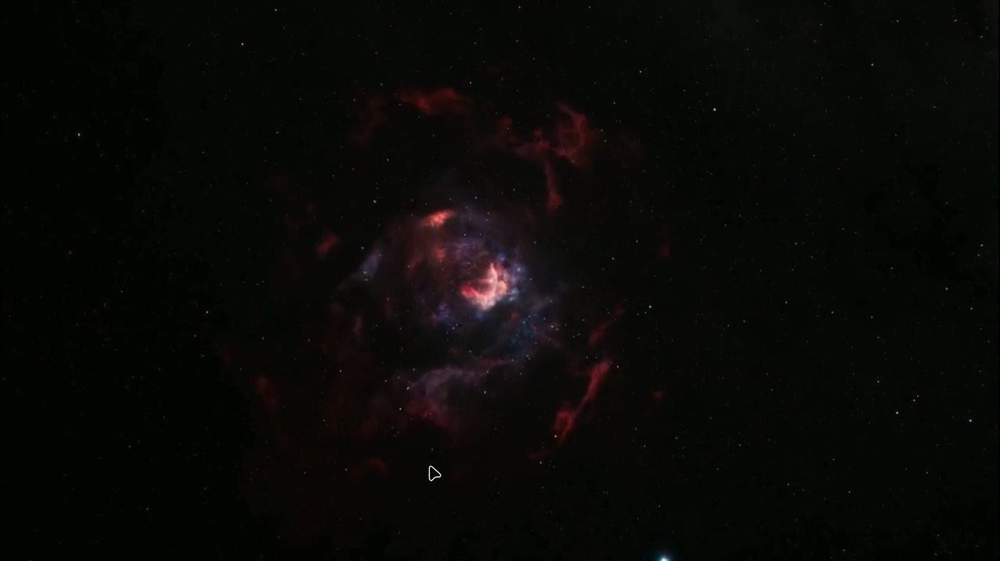New stars have dust clouds surround them , they will consolidate over time
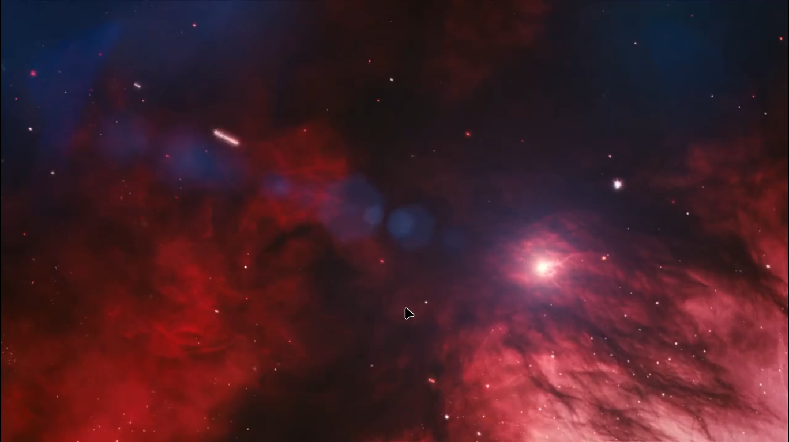Our sun from far away
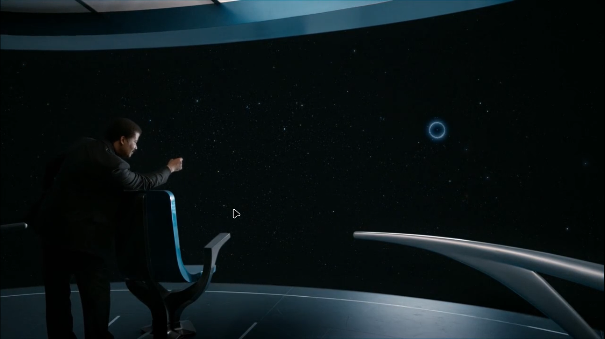In suns where there are 3 suns ,there is no night ,either day with red light or blue light
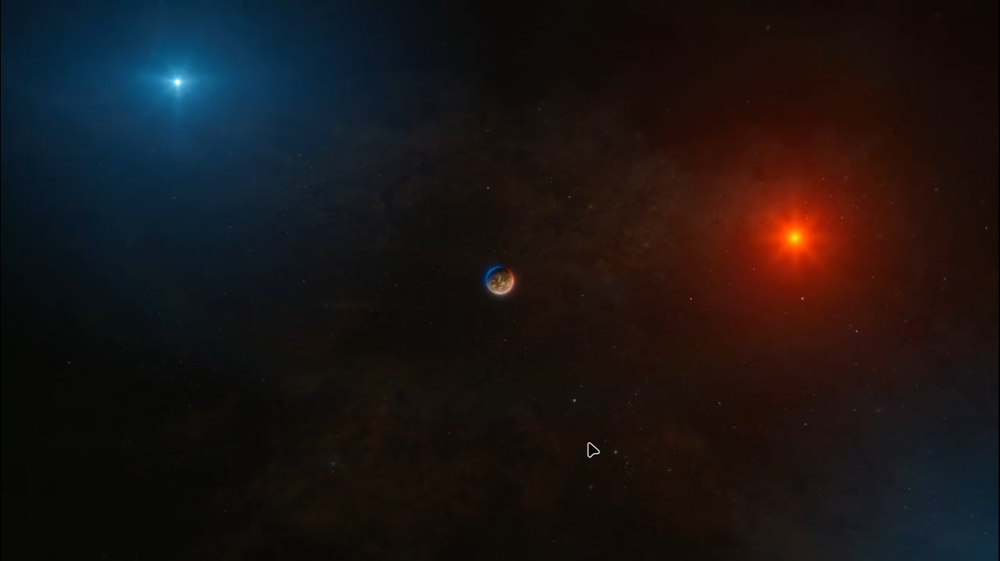Explore : sun , red giants , white dwarfs ,nebulas,super novas , neutron stars , pulsars , blackholes....at lot of things yet to be explored